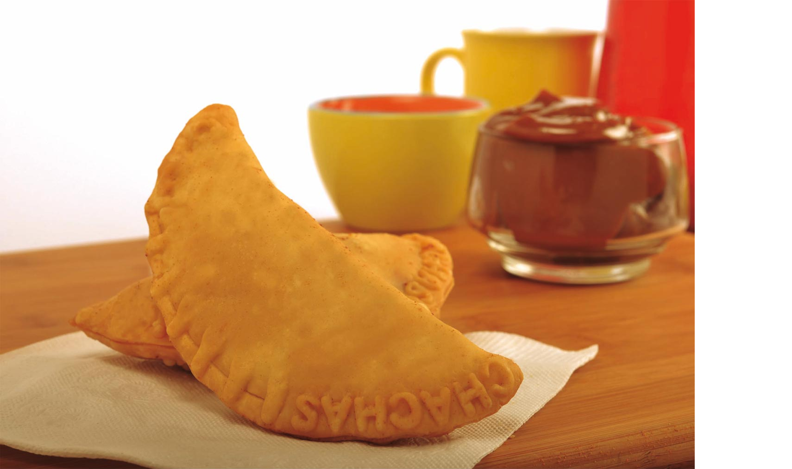

<ion-header>
  <ion-toolbar class="new-background-color">
    <ion-title text-center class="new-text-color">Menú Principal</ion-title>
  </ion-toolbar>
</ion-header>

<ion-content padding color ="secondary">
  
  <br>
  <ion-button  (click)="registrarNuevoMotoTaxi()" expand="block" color="primary ">Registrar</ion-button>
  <br>
  <br>
  <ion-button  (click)="listarMotoTaxis()" expand="block" color="primary">Listar y editar</ion-button>
  <br>
</ion-content>
